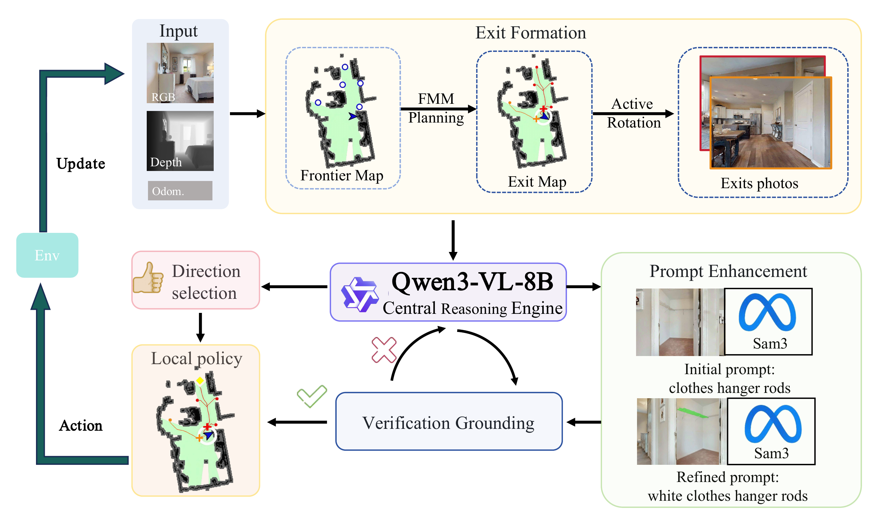

Open-Vocabulary Object Navigation (OVON) requires an embodied agent to locate a language-specified target in unknown environments. Existing zero-shot methods often reason over dense frontier points under incomplete observations, causing unstable route selection, repeated revisits, and unnecessary action overhead. We present DRIVE-Nav, a structured framework that organizes exploration around persistent directions rather than raw frontiers. By inspecting encountered directions more completely and restricting subsequent decisions to still-relevant directions within a forward 240° view range, DRIVE-Nav reduces redundant revisits and improves path efficiency. The framework extracts and tracks directional candidates from weighted Fast Marching Method (FMM) paths, maintains representative views for semantic inspection, and combines vision–language-guided prompt enrichment with cross-frame verification to improve grounding reliability. Experiments on HM3D-OVON, HM3Dv2, and MP3D demonstrate strong overall performance and consistent efficiency gains. On HM3D-OVON, DRIVE-Nav achieves 50.2% SR and 32.56% SPL, improving the previous best method by 1.9% SR and 5.56% SPL. It also delivers the best SPL on HM3Dv2 and MP3D and transfers to a physical humanoid robot. Real-world deployment also demonstrates its effectiveness.
DRIVE-Nav framework integrates three core modules: (1) Directional Reasoning — at decision corners, the agent extracts directionally consistent exits from path–circle intersections using FMM. (2) Adaptive Inspection — candidate exits are inspected through snapshot maintenance that keeps visual evidence aligned with evolving frontier geometry. (3) Verification — a Qwen3-VL-guided prompt enhancement module and an iterative segmentation–verification loop suppress open-vocabulary false positives through multi-round reasoning.

Comparison with state-of-the-art methods on HM3D-OVON, HM3Dv2, and MP3D. Bold indicates the best result. DRIVE-Nav achieves the highest SR and SPL on HM3D-OVON and MP3D, and the best SPL on HM3Dv2.
| Method | Venue | Training-free | HM3D-OVON | HM3Dv2 | MP3D | |||
|---|---|---|---|---|---|---|---|---|
| SR↑ | SPL↑ | SR↑ | SPL↑ | SR↑ | SPL↑ | |||
| SemExp | CVPR'20 | × | – | – | – | – | 36.0 | 14.4 |
| PONI | CVPR'22 | × | – | – | – | – | 31.8 | 12.1 |
| ZSON | NeurIPS'22 | × | – | – | – | – | 15.3 | 4.8 |
| CoW | CVPR'23 | ✓ | – | – | – | – | 7.4 | 3.7 |
| ESC | ICML'23 | ✓ | – | – | – | – | 28.7 | 14.2 |
| ActPept | RAL'24 | ✓ | – | – | – | – | 39.8 | 17.4 |
| UniGoal | CVPR'25 | ✓ | – | – | – | – | 41.0 | 16.4 |
| OpenFMNav | NAACL-F'24 | ✓ | – | – | – | – | 37.2 | 15.7 |
| L3MVN | IROS'23 | ✓ | – | – | 36.3 | 15.7 | – | – |
| InstructNav | CoRL'24 | ✓ | – | – | 58.0 | 20.9 | – | – |
| SG-Nav | NeurIPS'24 | ✓ | – | – | 49.6 | 25.5 | 40.2 | 16.0 |
| VLFM | ICRA'24 | ✓ | – | – | 63.6 | 32.5 | 36.4 | 17.5 |
| ApexNav | RAL'25 | ✓ | – | – | 76.2 | 38.0 | 39.2 | 17.8 |
| DAgger | CVPR'23 | × | 10.2 | 4.7 | – | – | – | – |
| DAgRL | CVPR'23 | × | 18.3 | 7.9 | – | – | – | – |
| RL | ICLR'20 | × | 18.6 | 7.5 | – | – | – | – |
| DAgRL+OD | IROS'24 | × | 37.1 | 19.9 | – | – | – | – |
| Uni-NaVid | RSS'25 | × | 39.5 | 19.8 | – | – | – | – |
| MTU3D | ICCV'25 | × | 40.8 | 12.1 | – | – | – | – |
| VLFM | ICRA'24 | ✓ | 35.2 | 19.6 | – | – | – | – |
| TANGO | CVPR'25 | ✓ | 35.5 | 19.5 | – | – | – | – |
| MSGNav | CVPR'26 | ✓ | 48.3 | 27.0 | – | – | – | – |
| DRIVE-Nav (Ours) | Ours | ✓ | 50.2 | 32.6 | 72.4 | 41.3 | 41.8 | 22.6 |
The agent efficiently explores unseen indoor environments with directional reasoning and iterative verification, and successfully locates target objects specified by open-vocabulary language descriptions.
We deploy DRIVE-Nav on a physical humanoid robot and demonstrate its capability to efficiently navigate to target objects in real-world environments, without any prior knowledge of the surroundings.
@article{drivenav2025,
title={DRIVE-Nav: Directional Reasoning, Inspection, and Verification for Efficient Open-Vocabulary Navigation},
year={2025}
}This website is adapted from Nerfies, licensed under a Creative Commons Attribution-ShareAlike 4.0 International License.